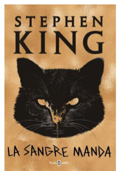
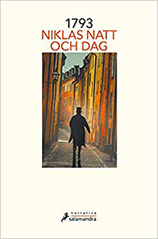
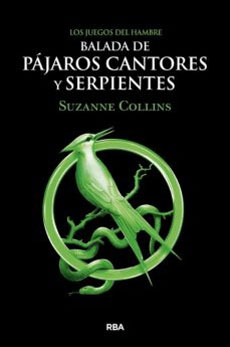
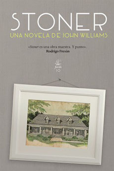
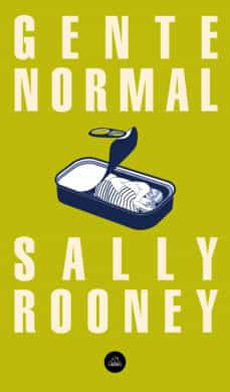

La sangre manda - Stephen King

Por Que Me Sigue La Luna? Y Otras Preguntas Raras Que Hago A Veces - Gabriel León

1793 - Niklas Natt Och Dag

Los Amantes De Praga - Alyson Richman

El Tatuador De Auschwitz - Alyson Richman

Balada De Pajaros Cantores Y Serpientes - Suzanne Collins

Stoner. Una Novela De John Williams

Gente Normal - Sally Rooney